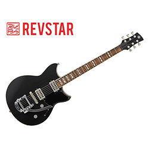
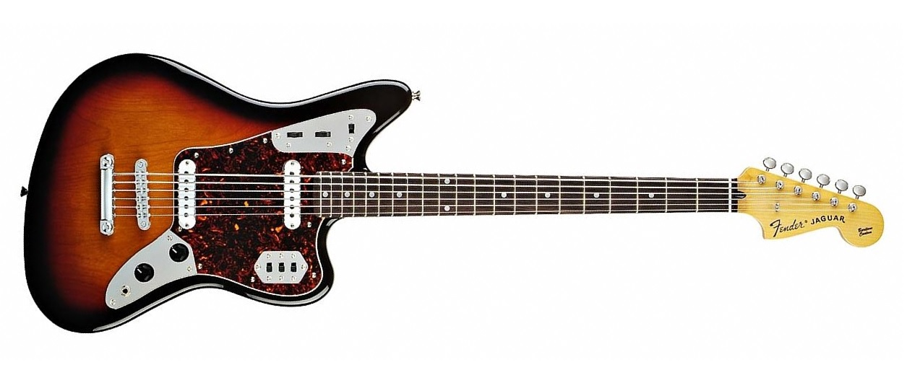

Guitare LES PAUL
La Gibson Les Paul ou LP est une guitare électrique de type « corps plein » (solid body) fabriquée aux États Unis par la firme américaine Gibson Guitar Corporation et dans d'autres pays par sa filiale Epiphone. C'est en 1952 que le premier modèle de guitare Les Paul sort de l'usine Gibson à Kalamazoo. Cette guitare doit son nom à la collaboration commerciale de Gibson avec le musicien, très populaire à ce moment-là, Lester William Polfus, connu sous le nom de Les Paul. Elle est déclinée en plusieurs modèles et appellations qui ont pour certains un design différent du modèle original. Après bien des avatars et une interruption de sa fabrication de 1961 à 1967, en raison d’un manque d’intérêt commercial du modèle le menant à son évolution vers la SG2, la Les Paul demeure probablement la guitare la plus représentative de la marque et est un grand classique de guitare électrique.

Guitare Fender Telecaster
La Fender Telecaster est une guitare électrique produite et commercialisée en série par Fender à partir de 1951. C'est l'une des premières guitares électriques à corps plein et la première à avoir une réelle histoire commerciale. D'abord baptisée Broadcaster en 1950, elle connaît au fil du temps des modifications de sa lutherie sans que le design originel ne change drastiquement. Prisée par de très nombreux guitaristes dans le monde, la Telecaster est l'un des modèles de guitares les plus célèbres aujourd'hui.

Guitare Fender Stratocaster
La Stratocaster, souvent surnommée Strat, est un modèle de guitare électrique produit par la marque américaine Fender. Elle succède en avril 1954 à la Telecaster, sans la remplacer, ces deux instruments demeurant au catalogue jusqu'à nos jours. C'est un des modèles les plus répandus au monde, et sa silhouette est devenue l'icône même de la guitare électrique.

Guitare ESP
ESP (Electric Sound Product) est un fabricant japonais de guitares et basses depuis 1975. Il est orienté vers les guitares metal et a de nombreux artistes endorsees célèbres, tels James Hetfield et Kirk Hammett de Metallica, ou encore Richard Zven Kruspe et anciennement Paul Landers du groupe Rammstein. ESP Guitars est aujourd'hui un concurrent sérieux des marques historiques comme Fender ou Gibson et possède une branche custom shop. Dans le domaine des guitares pour le heavy metal, ESP est le principal concurrent de la marque Jackson Guitars. ESP possède également d'autres labels, comme Edwards et Navigator (guitares haut de gamme réservées exclusivement au marché japonais).

Guitare YAMAHA
Yamaha Pacifica est le nom d'une série de guitares électriques fabriquées par Yamaha. La ligne a été conçue dans la custom-shop californienne de Yahama par Rich Lasner, travaillant avec le constructeur de guitare Leo Knapp. Initialement prévu par Lasner Knap comme un projet de test, Yamaha Japon a choisi de produire ces instruments. Plusieurs variantes ont été produites pendant les années 1990 et le début des années 2000, y compris des modèles de type Fender Stratocaster et Telecaster, ainsi que des modèles de type Super Strat. De part son faible prix la Pacifica 112 est largement considérée comme un des meilleurs rapport qualité-prix parmi les guitares électriques pour débutants actuellement sur le marché1.
Guitare Fender Jaguar
La Fender Jaguar est un modèle de guitare électrique créé par la marque Fender en 1962. Conçue à l'origine comme un modèle destiné au marché de la musique surf, elle connait une deuxième vie en tant que modèle emblématique de la vague grunge et rock indépendant des années 1990.
